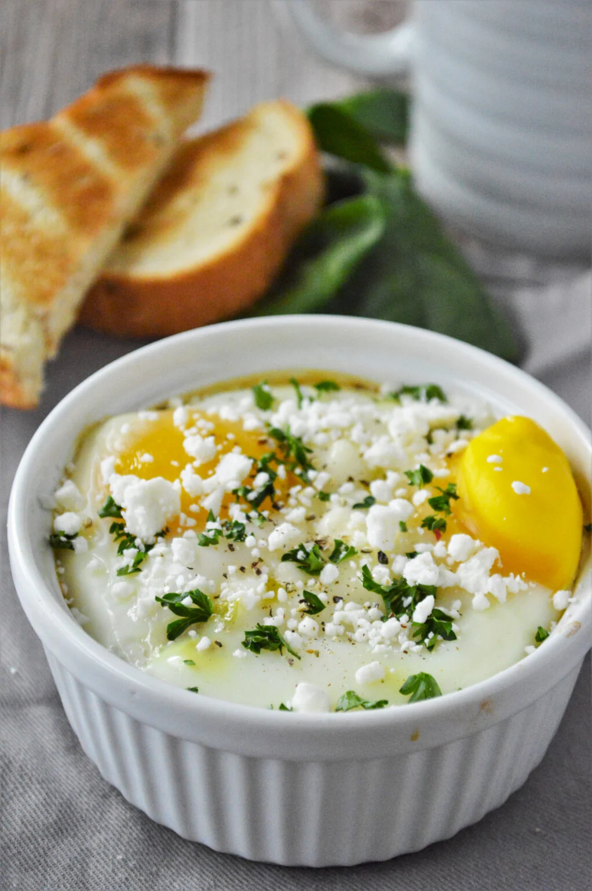

Baked Feta Eggs

Description
These baked feta eggs are so very simple to make, but a great way to
style up breakfast, brunch, or dinner. Feel free to adapt the
flavors to your taste preferences.
Ingredients
- 2 small tomatoes, diced (such as Campari®)
- 2 tablespoons diced red onion
- 1 clove garlic, minced
- 1/2 cup feta cheese, roughly crumbled
- 2 teaspoons olive oil
- 2 large eggs
- 1/2 teaspoon dried oregano
- salt and freshly ground black pepper to taste
- thinly-sliced fresh basil for garnish
Steps
-
Preheat the oven to 375 degrees F (190 degrees C), and spray 2
oven-safe ramekins with cooking spray.
-
Combine tomatoes, red onions, and garlic in a small bowl and
divide evenly between ramekins. Sprinkle with feta cheese,
drizzle with olive oil, and sprinkle with oregano. Place
ramekins on a baking sheet.
-
Bake in the preheated oven for 8 minutes. Remove from oven; do
not turn oven off.
-
Gently stir feta into tomato mixture. With the back of a spoon,
make indentations in tomato mixture. Crack an egg into each
indentation.
-
Return ramekins to the oven, and bake until egg whites are
opaque but yolks are still runny, or cooked to your taste, 10 to
14 minutes. Season with salt and pepper, garnish with basil, and
serve.